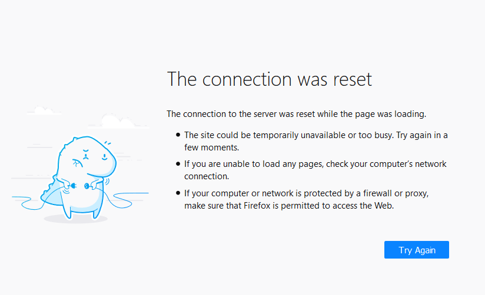

突破网络长城
“翻墙”是什么？
根据 Wikipedia, “翻墙”又叫“突破网络审查”，是通过多种方法来规避网络审查的行为。
为什么要“翻墙”？
当你在阅读这篇文章的时候，你应该已经意识到了“墙”的存在：

防火墙，一个知名的例子是防火长城，会检测并切断特定的连接。
上图展现的是一个“连接被重置”错误信息。“连接重置”是防火长城常使用的一个封阻手段：你在访问网站之前，需要先和目标网站建立一个连接。除了特殊例外，中国的所有国际出口连接均经过防火长城。当防火长城检测到应该被禁止的连接，会在中途假装目标服务器向客户端发送“连接重置”指令，使得客户端以为另一端中止了连接。客户端因此也中止连接，防火长城对连接的阻断达成。
继续以防火长城为例，防火长城的目的是维护中国政府对网络信息的审查。其封阻的网站和服务包括但不限于未遵守中国政府审查的社交媒体、“色情”、“恐怖”、以及对中国政府不利的新闻和政治宣传。要访问这些网站和服务，你需要绕过防火墙的审查。
代理工具如何“翻墙”？
“代理服务器”是一种常见的翻墙方式。其基本原理是通过一个中间人把信息送达目标地址（网站、服务...）。

来源，由 noarch 翻译
{kind=link}
从上图可以看出，“代理”是信息交换过程中的“中间人”。在使用代理访问“被墙”网站的时候，向被墙网站的请求先经过代理服务器，而这个代理服务器并没有“被墙”，可以访问。该代理服务器本身也在“墙外” - 它处于中国大陆之外，并不受审查。通过一个没有“被墙”，也不受墙管理的代理服务器中转，你就可以访问被墙的网站和服务了。
“翻墙”的安全性如何？
目前可用的，商业和开放的“翻墙”技术都能以加密来保证你的信息安全。你的代理流量会被以不同的形式加密传输，保证除了你的设备和代理服务器之外没有人能窃取你的代理流量。以 AES-128（一种加密算法） 为例，除了使用旁路攻击及社会工程攻击（例如诈骗、审问密钥拥有者），理论上攻击者需要穷举高达 2128 个密钥来破解 AES-128 加密。
你可能会有疑问，如果我的代理提供者想要窃取我的信息呢？
如果你在访问一个 HTTPS 加密的网站，你不用担心代理提供者窃取你的信息。这层 HTTPS 加密只有你和你访问的网站能解密 - 即使是你的代理提供商也不能解密你和其它 HTTPS 网站的流量。如果你在通过代理通话，以 Telegram 为例，Telegram 的语音和视频通话是端到端加密的：这意味着只有你和电话另一边的人能解密这个通话。无论是你的代理提供者，还是 Telegram 官方都无法解密你的通话内容。
比起破解代理通道的内容，防火墙更倾向使用“流量特征识别”。防火墙通过数据包分析等方法区分代理流量与其它浏览流量；当防火墙识别到大量非正常流量时，会对流量的目标，也就是代理服务器进行封锁。
数据混淆是一种反制流量特征识别的方法；通过混淆，代理流量被伪装成正常的浏览流量，绕过防火墙的检测。以 ShadowsocksR 使用的 tls1.2_ticket_auth 为例，它将代理数据伪装成 TLS 协议的握手请求，以欺骗防火墙。
“翻墙”后不要做什么？
下面总结一些人们在“翻墙”后常犯的一些错误：
通过代理登录墙内的帐号。 这相当于向监控者宣布“我在使用代理”。
在墙外的帐号上使用与墙内帐号一样的信息， 或者在墙外社交平台上公布自己墙内的信息。这相当于向监控者宣布“这是我的墙外帐号，我在墙外发布了***”。
通过公共代理进行 P2P 传输。 大多数（尤其是免费的）代理提供商禁止例如“种子”下载的 P2P 传输。除非代理提供商特别声明允许，尝试这样做可能会导致种子下载失败，甚至是代理帐号被封禁。如果你自己租用服务器搭建代理，请参考服务器提供商的条款。
在购买时填写真实的住址及银行卡。 如果你遇到了一个监控者运营的钓鱼网站，你将会遇到不可预测的后果。如果你需要在墙外购买真实物品，请使用代购或填写邮件代收站的地址，并使用虚拟信用卡或加密货币。
允许输入法联网。 商业的输入法大多数包含“云输入”功能，该功能会将你输入的内容上传至输入法提供商的服务器上进行分析。当你用它们输入“敏感词”时会带来不可预料的后果。
使用“杀毒软件”。 得益于封闭的安全策略， Android 设备在绝大多数情况下不需要“杀毒软件”。任何的商业 Android “杀毒软件” 均是为了向你展示广告以及监控你的活动。
公开分享你的代理服务器信息。 除非有特殊准备，严禁公开发布你的代理服务器（或是代理服务帐号）信息。这些信息可以帮助监控者找出你的身份。
进行未加密的连接。 在进行未加密的连接时（例如访问使用明文 HTTP 协议的网站），你的代理提供者（在使用 Tor 时，是你的 "Exit Guard"）将能窃取和修改你发送和接收到的信息。